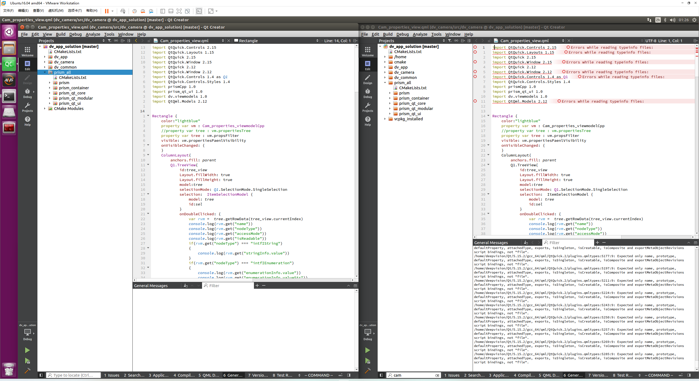

1 为什么需要自己编译
相机软件 使用最新版本的qt 开源版本 5.15.2，以及cmake，qml来组织工程，
遇到几个问题
1.1 Qt5.15.2预装的Qt Creator不支持在Ubuntu16.04环境运行
qt 5.15.2预装版本的qt creator是在ubuntu20下使用qt 6和gcc9编译的，ubuntu16.04 下不能使用，我曾尝试升级ubuntu16的libc，最终把ubuntu16 环境搞崩溃，重启之后很多系统软件都不能运行了，apt升级也升级不了，依赖树产生问题。除非你添加18或20的源才能正确的升级，所以不得不重做开发环境， 先用qt 5.12.6预装的qt creator 4.10.2进行开发
1.2 Qt Creator 4.10.2的问题
-
加载Qt 5.15.2的qml 控制库，很多误报，不管是在cmake运行，还是IDE里的代码提示，都很多噪音
-
cmake 子模块代码变更后， 检测不到变更，只能整个工程rebuild才能正常
-
cmake功能支持比较粗糙， 设置cmake比较不方便
-
cmake循环依赖问题(在新的版本上不是问题)
1 2 3 4 5 6 7 8 9 10 11 12 13 14 15 16 17 18 19 20 21 22CMake Warning at CMakeLists.txt:176 (add_executable): Cannot generate a safe runtime search path for target tst_dv_camera because there is a cycle in the constraint graph: dir 0 is [/home/deepvision/source/repos/dv_app_solution/build-dv_camera-Desktop_Qt_5_15_2_GCC_64bit-Debug] dir 4 must precede it due to runtime library [libdv_zlog.so] dir 5 must precede it due to runtime library [libdv_zlog.so] dir 1 is [/home/deepvision/source/repos/dv_app_solution/vcpkg_installed/x64-linux-dynamic/debug/lib] dir 2 must precede it due to runtime library [librc_genicam_api.so.2.6] dir 4 must precede it due to runtime library [libdv_zlog.so] dir 5 must precede it due to runtime library [libdv_zlog.so] dir 2 is [/home/deepvision/source/repos/dv_app_solution/vcpkg_installed/x64-linux-dynamic/lib] dir 0 must precede it due to runtime library [libdv_camera.so] dir 1 must precede it due to runtime library [libminizip.so] dir 4 must precede it due to runtime library [libdv_zlog.so] dir 3 is [/home/deepvision/Qt/5.15.2/gcc_64/lib] dir 4 is [/home/deepvision/source/repos/zlog/lib/linux] dir 5 must precede it due to runtime library [libdv_zlog.so] dir 5 is [/home/deepvision/source/repos/dv_app_solution/vcpkg_installed/x64-linux-dynamic/share/zlog/../../lib] dir 0 must precede it due to runtime library [libdv_camera.so] dir 1 must precede it due to runtime library [libminizip.so] dir 4 must precede it due to runtime library [libdv_zlog.so]
1.3 尝试过的其他解决方法
我到github release下载了多个qt creator的版本，发现即使是qt creator 4.15版本，也是依赖了libc 2.29（奇怪的是最新版的qt creaotr只依赖了libc 2.28）， 远超出ubuntu16 的2.23
可以用这条指令查看libc的版本
|
|
我也试过单独为qt creator编译高版本的libc，放在单独的目录，结果发现，ubunt16.04下，最多只能调用libc 2.27的版本保证不会崩溃， 一旦调用了2.28或2.29就会崩溃
libc 可以通用这个脚本编译,记录一下，如果将来有需要用到的话
|
|
由于以上几个方法都没有成功，所以决定自己编译qt creator
2 编译
由于我虚拟机空间不足，我后来卸载掉了qt 6，所以查看qt creator源码后，我使用qt 5编译的最后一个版本qt creator 8.
参照readme 进行编译， 记录一下编译中遇到的问题和解决步骤
qt creator 最新版本目前是qt creator 12,但其实8已经算是很新的版本了
我查看2022年3月份时我拉取的qt creator代码，那时最新的开发分支才7 beta
所以8也算是比较新的版本
2.1 编译LLVM
2.1.1 正常流程
克隆代码
|
|
创建目录
cmake生成
|
|
构建
|
|
2.2.2 cmake失败问题解决
2.2.2.1 libxml2 找不到
sudo apt install dev-libxml2 安装
cmake生成中加入参数 -D CMAKE_PREFIX_PATH="/usr/"
|
|
2.2.2.1 config.guess: 71: Syntax error: word unexpected (expecting “in”)
参照 llvm github issue
config.guess Syntax error: · Issue #52740 · llvm/llvm-project (github.com)
应该config.guess文件格式问题，准确说是换行符问题
因为我在windows上拉了代码后，上传到公司ftp服务器上，再在linux下载代码导致的问题
如果直接在linux拉代码应该不会有这个问题
解决方法 也简单，issue中提到使用dos2unix 对这个配置文件格式化成unix的换行符
|
|
2.2.2.2 其他注意事项
llvm编译会占用大量磁盘空间和内存，提前准备好防止编译失败要重新编译
2.2 编译qt creator
克隆源码后切换到你想要编译的分支
例如我想用qt 5 编译v8.0.2 (最后一个qt5编译的qt creaotr版本)
创建 build文件夹，进入文件夹生成cmake
|
|
执行编译
|
|
执行安装
|
|
然后修改qt creator的启动脚本，在脚本后面导致 ld_library_path变量之前，把qt 5的路径加进去
|
|
就可以用qtcreator.sh启动程序了
如果用在线安装器安装了qt 5.15会有 ~/.local/share/applications/org.qt-project.qtcreator.desktop配置，修改为刚才修改好的启动脚本就可以从菜单或任务栏打开编译好的qt creator了
|
|
3 解决的问题验证

左边是qt creator8 右边是qt creator 4.10
qml 和cmake都不误报了
qt creator8已上传到dv-rd
>> Home
Comments